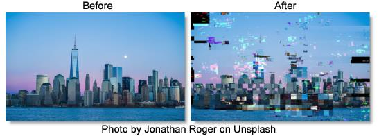

S_DigitalDamage
Description
Simulates bad digital TV transmission with many options, including freeze-frames, shifting and flowing blocks, various kinds of blocky noise, and pixelization. Can give looks similar to MPEG stream errors, digital dropouts, and satellite feed data corruption.
The S_DigitalDamage filter comes from the Emmy award winning Boris FX Sapphire filter set.
Category
Stylize.
Controls
Presets
To select a preset, pick one from the Presets window.
Time
The effect is advanced in time.
Intensity
Overall intensity of the damage.
Damage Size
Turn up to increase the average size of the damaged areas.
Damage Size Rel X
Turn up to elongate the damage areas horizontally. This doesn't stretch the image, just changes the aspect ratio of the damage areas and noise patterns.
Seed
Used to initialize the random number generator. The actual seed value is not significant, but different seeds produce different results and the same value should give a repeatable result.
Freeze
Enable freeze−frame damage.
Freeze Details
Freeze Threshold
Decrease for more frozen areas on each frame.
Freeze Saturation
Boost the saturation of frozen areas for a more damaged look.
Freeze Quality
Reduce to give the frozen areas a JPEG−quantized look.
Freeze Errs
Adds JPEG quantization errors to the frozen areas.
Brights Noise
Enable noise that appears in the bright areas of the image.
Brights Noise Details
Brights Threshold
Areas brighter than this will be subject to brights noise.
Brights Band Threshold
This damage type occurs in bands. Increase this parameter to make more damage bands, and thus increase the amount of overall damage.
Brights Band Freq
Controls the average height of the damage bands. Decrease for larger bands, increase for shorter, finer bands.
Pixelate
Enable pixelation damage.
Pixelate Details
Pixelate Frequency
Controls the size of the blocky pixels. Increase for more, smaller pixels. Decrease for fewer, larger pixels.
Pixelate Hold
Controls how the pixelate damaged areas move. Increase to make the damaged areas stay in one place over more frames. Decrease to make it more random.
Pixelate Threshold
Decrease for more overall pixelation per frame. Increase for less.
Pixelate Overdrive
Pixelate damage can invert and distort the damaged area. Increase this parameter to make it look more damaged.
Block Noise
Enable blocky−noise damage. This is commonly seen with bad satellite TV transmission. Bands and blocks of noise overlay and interact with the source footage.
Block Noise Details
Blocks Intensity
Increase the intensity of the block damage.
Blocks Threshold
Decrease for more overall damage per frame or increase for less.
Blocks Softness
This parameter softens the damage pattern as it's increased.
Blocks Chroma
Increase to overdrive the chroma of the block noise and make it look more damaged.
Invert
Enable image−inverting damage that inverts and recolors bands of the image.
Invert Details
Invert Threshold
Decrease for more overall damage per frame or increase for less.
Invert Darken
Increase to darken the inverted areas more which makes them stand out more and look more damaged.
Invert Pattern Freq
Controls the spatial frequency of the invert damage pattern. Increase to make the inverted area pattern finer or decrease for larger areas of damage.